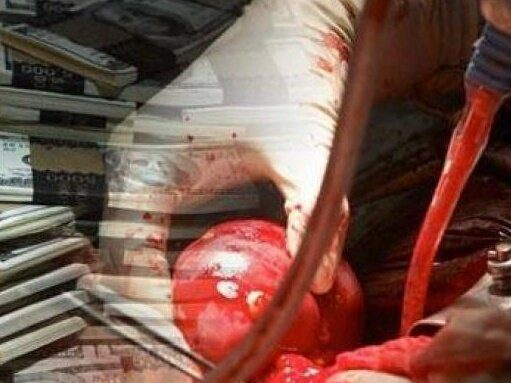

In the last few weeks disturbing reports surfaced out of Iraq that the stating that the Islamic militant group ISIS had expanded its terror operations to include organ trafficking. The reports originate from a lone official in the Iraqi embassy and reference dozens of bodies in mass graves missing their internal organs. The story has since been reported everywhere from fringe new sources like the Jewish Press and the right-wing Freedom Center all the way to more respectable outlets like CNN. FOX news has jumped all over the organ harvesting story and repeated it in numerous reports. In the last week I’ve received two interview requests from major news organizations who were aware of my book The Red Market and wanted me to comment.
It’s true that there is a long history of organ theft during times of war–most notably during the war in Kosovo and more recently Israel security forces in Palestine. I have no illusions that ISIS would be happy to get into the organ trafficking business if it meant that they could make a little money to support their ongoing terrorist operations. However, I just don’t believe that the reports are credible or that ISIS really has the infrastructure to make it work.
In the six years that I spent investigating organ trafficking networks the recipient and the donor were always in the same city when the operation took place. This usually meant that the recipient flew to India, Pakistan, China or Egypt and the donor was sourced from a prison or a nearby slum. Sometimes they were paid, sometimes they were kidnapped. Occasionally both the donor and the recipient would fly to a Caribbean Island or South Africa for the operation. I never have heard of a single case of a kidney or heart being harvested in one country illegally and then being sent by air to another one.
The reason boils down to logistics. Transplants are highly coordinated affairs and require the cooperation from hospitals, ambulance services, laboratories, police, customs officials and other government agencies. Everything needs to be timed perfectly or the brief window of keeping the organ alive for transplant will pass.
In order to reduce the possibility of rejection n donor organ should be HLA matched to its recipient. This needs to be done in advance. In China death row and political prisoners are often tissue typed while incarcerated. Their executions are preformed on demand in order to facilitate transplants. It is still technically possible to dose someone with enough immune-supresant drugs that HLA matching is necessary, but turning off the recipient’s immune system carries other serious health risks. Non-matched transplants are really only ever done in times of extreme duress.
If you consider the reports from Iraq, the allegations of organ trafficking just seem, well, far fetched. Even if ISIS did want to get into the organ business, how would they coordinate the mass execution of prisoners with their intended recipients? The reports say that ISIS killed more than a dozen doctors who refused to preform the operations. How many of the remaining surgeons in the city would be qualified? Some reports suggest that the organs are headed to Europe. So, now we’re asked to believe that somehow a flight from an ISIS controlled area isn’t considered suspicious. Can we imagine that a team of people from this plane being expedited through customs and to a European hospital with a package that says it’s a live organ?
Forget the fact that they could just as easily get a cheap and reliable illegal organ transplant in South Africa, Pakistan, Indonesia, Brazil or India without going to a war zone, perhaps the recipient flies into Iraq, instead. If so, why do they need to harvest the kidneys from several prisoners at once? Won’t one kidney do just fine? Or, are we to assume that the business is to busy that there are twelve simultaneous transplants going on at the local bomb-blasted hospital? That’s a feat that even John’s Hopkins would find challenging.
Of course, it might be possible that one or two black market transplant are happening in ISIS controlled territory. But these wouldn’t be for-profit affairs. I can imagine that perhaps some ISIS commander or his family member might have kidney failure and they turn to their prisoners as a source of replacement body parts. It might indeed be possible to convince a doctor to preform the operation under duress. But to think that this is a reliable revenue stream is pure fantasy.
It is far more likely that the reports of mutilated bodies with organs torn out were actually the result of torture. The New York Times reports, there’s a video going around of an ISIS fighter removing the organ of an executed prisoner and then taking a bite. This is also a terrible and horrible thing. It’s just not organ trafficking.
Let me propose another narrative for why the media is so fascinated with this story. Perhaps people are so disturbed by the atrocities that ISIS is committing on a daily basis that we want to make them seem even more depraved then they are. It’s the same tendency that some people have to suggest that Hitler didn’t only perpetrate the Holocaust, but was also a warlock involved in evil occult practices. Wasn’t the holocaust bad enough? In the present day, what is worse than mad-dog boogeymen cutting out the organs of their helpless prisoners and selling them back to us? So yes, while ISIS is evil and responsible for some of the most reprehensible crimes I can imagine. I can’t imagine that they’re sophisticated enough to be successful in the organ business. At least, not yet.